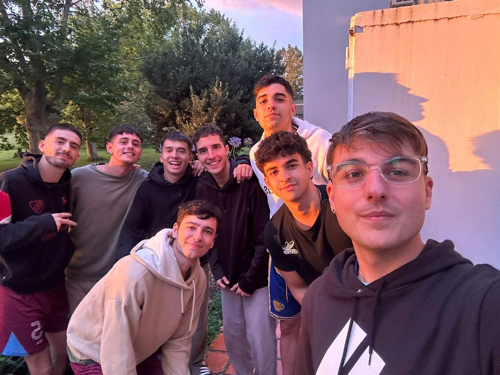
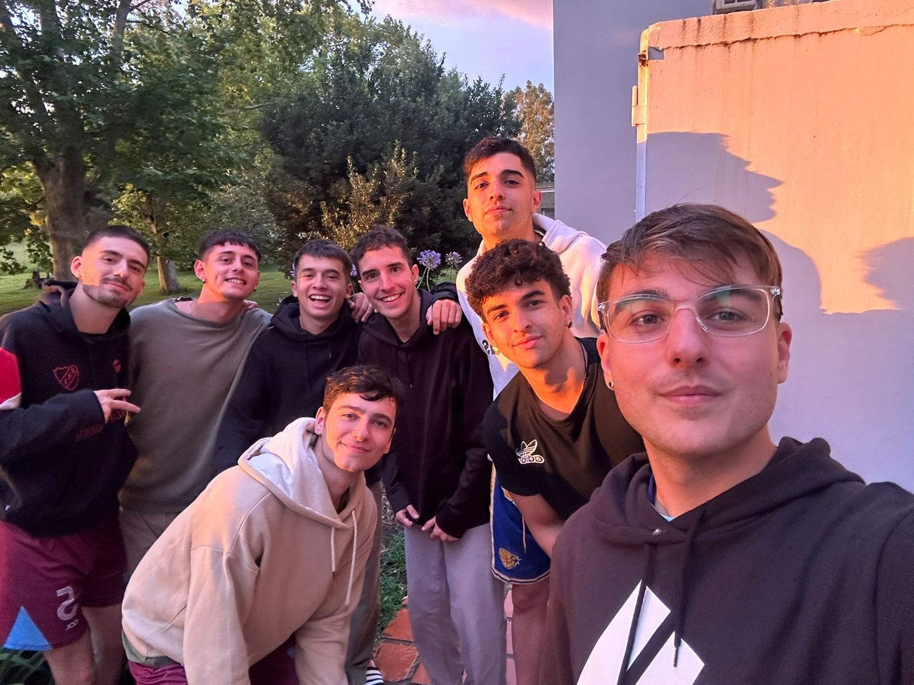

Historia del Club
 

Un 4 de agosto de 2023, nacía el club más grande del mundo: Mingo F.C.
Todo comenzaba un 4 de Agosto de 2023 en el barrio Villa Urquiza. Un grupo de amigos cuyos corazones latían al ritmo de un balón de fútbol. Leandro, Tomás, Francisco, Valentina y Joaquín compartían una pasión inquebrantable por el deporte rey. Cada fin de semana, se reunían en el único campo de fútbol del pueblo para disfrutar de partidos amistosos, risas y, por supuesto, la competencia sana.
A medida que sus habilidades y su amor por el fútbol crecían, surgió en ellos la idea de crear algo más que simples encuentros casuales. Querían construir algo que perdurara en el tiempo, algo que trascendiera las tardes de diversión. Así nació la idea de fundar su propio club de fútbol.
La pequeña comunidad se contagió de la emoción de este grupo de amigos y, con el apoyo de vecinos entusiastas, comenzaron a trabajar arduamente. Organizaron reuniones en la plaza del pueblo, buscaron patrocinadores locales y, lo más importante, consiguieron el terreno necesario para establecer su propio campo de fútbol.
Los amigos se dividieron las tareas: Tomás, el líder nato, asumió la presidencia; Luis, el estratega, Leandro se convirtió en el director técnico y Vicepresidente; Joaquín y Valentina, las almas creativas, se encargaron del diseño de uniformes y la creación del logo; y Francisco, el incansable, coordinó las actividades comunitarias para recaudar fondos y se encargó del armado del equipo.
Con el entusiasmo de todo el pueblo, el sueño comenzó a materializarse. La inauguración del club, que llevaría por nombre "MINGO F.C.", fue un evento lleno de emoción y alegría. La gente se congregó para presenciar el primer partido en su nuevo campo, donde la verde hierba brillaba con el sol del atardecer.
A medida que los jugadores corrían por el campo, los vítores y aplausos de la comunidad crearon una atmósfera de camaradería que perduraría en la memoria de todos. "MINGO F.C." no solo se convirtió en un lugar para jugar al fútbol, sino también en un símbolo de unidad y amistad.
Con el tiempo, el club creció en éxito y en número de miembros. Lo que comenzó como un sueño compartido entre amigos apasionados se transformó en una tradición arraigada en el corazón del pueblo. La fundación de Valle Unido FC demostró que la verdadera magia del fútbol va más allá de los goles; es la conexión y la comunidad que crea en el proceso.
Autoridades del club
Presidente
Tomás Franco Lazzaro
Vicepresidente
Leandro Martín Siri
Secretario general
Francisco Orlando Pérez
Nuestras sedes
SB5 fútbol
SB5 y la Asociación Civil I.D.E.S., se unieron con el fin de desarrollar un emprendimiento deportivo único, con instalaciones de alta calidad para la práctica deportiva de personas de todas las edades, apostando fuertemente al fútbol y la inclusión en las nuevas generaciones.
La Asociación Civil I.D.E.S. (Instituto Deportivo, Educativo y Social), fundada hace más de 3 años centra sus esfuerzos en la permanente creación de acciones sociales y benéficas vinculadas a prácticas deportivas en toda la Argentina.
Platense
Ubicado en un punto estratégico del Barrio de Villa Urquiza, el Complejo "Platense" cuenta con 30 hectáreas en las que a diario se entrena el presente y el futuro del Club Atlético Independiente. Por allí pasaron grandes glorias y otras nuevas se están formando.
En la actualidad, este predio deportivo cuenta con 9 campos de juego en perfecto estado para el entrenamiento del plantel profesional y las divisiones inferiores.